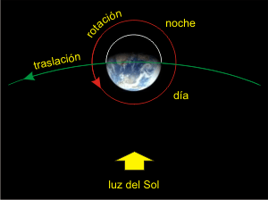

|
Las enseñanzas del Maestro Ciruela
Las mareas y el error de Galileo
En 1610 y siendo profesor en Padua Galileo publicó su ingeniosa teoría para explicar la mareas. Es muy sencilla y resulta de la composición de la rotación de la Tierra alrededor del Sol con la rotación sobre su propio eje. Los movimientos se suman del lado de afuera de la órbita y se restan del lado interior. En efecto, los habitantes del planeta se mueven más rápido durante las noches y más lento durante el día. Esa diferencia diaria, suma y resta, produce las mareas. Falso. El fenómeno ocurre, es cierto, pero insignificante a los efectos de producir las mareas.

El problema es que Galileo no era marino ni tenía amigos que lo fueran. Los marinos siempre fueron grandes observadores de los cielos ya que los utilizaban para orientarse. Así este gremio de aventureros era el puente natural entre los saberes de los cielos y el mar. Cualquiera podría haberle dicho: no, Gali, las mareas se producen a diferentes horas del día, incluso de noche. Pero sobre todo podrían haberle mencionado esta particularidad de las mareas que es tan singular. Las mareas -los ascensos y descensos del nivel de mar- no son constantes; hay mareas muy pronunciadas que llamamos vivas y las hay mucho menores que llamamos muertas. Y existe una coincidencia asombrosa y misteriosa de la cual tendrías que tomar nota: los días que tenemos eclipses solares coinciden con mareas vivas; y los días de eclipses lunares, con mareas muertas.
Cincuenta años después de Galileo, Newton logró explicar las mareas con una simple aplicación de su teoría de la gravitación universal y la curiosidad de la coincidencia con los eclipses pasó a convertirse en una pavada celestial.
|